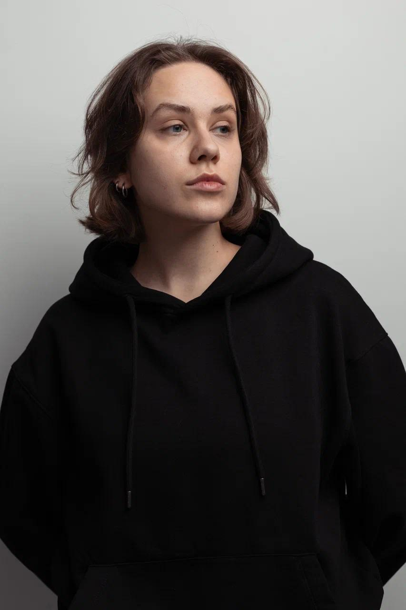

(CV)
Xenia Nekipelova
Film Director

Selected Film Work
AURA — Fiction Short, 2026
Director / Original Idea
Finalist, Saint Anna International Film Festival
LISTEN! — Documentary Short, 2026
Director / Screenwriter
LUCK — Fiction Short, 2026
Director / Writer
Professional Experience
ZHUSUP — Historical Drama Feature
Kyrgyzfilm / Directing Department
Untitled Fairy-Tale Feature Film (NDA)
Assistant / Crowd Department Coordinator
Project Development
- Research & References
- Pitch Materials
- Grant Applications
- Festival Strategy
Selected Artistic Projects
Sisyphus — Participatory Performance & Installation, 2021
Concept / Artist
Interactive installation exploring environmental responsibility through a collective physical action in which participants pushed an accumulating sphere of waste.
Professional Art & Cultural Experience
Garage Museum of Contemporary Art, 2019–2020
Contemporary Art Triennial
Worked within a major contemporary art exhibition environment, collaborating with artists, curators and audiences.
ARTLIFE International Art Festival, 2020
Festival Coordination
Coordinated teams and public-facing activities for an international festival featuring 155 artists from 38 countries.
Education
- Moscow School of New Cinema — Film Directing, Dmitry Mamuliya’s Fiction Film Workshop, 2025–2027
- HSE University — BA, Faculty of Social Sciences, minor in Integrated Communications & Contemporary Art, 2018–2022
- University of Palermo — History of Art, 2021
- The Museum of Modern Art (MoMA) — Modern Art & Ideas, 2020
Languages
Russian — Native
English — Upper-Intermediate
Spanish — Intermediate
German — Basic